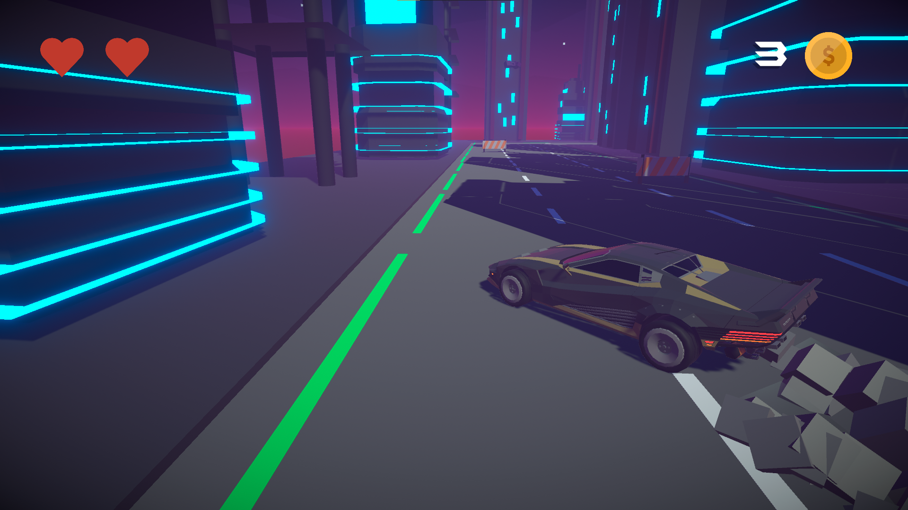
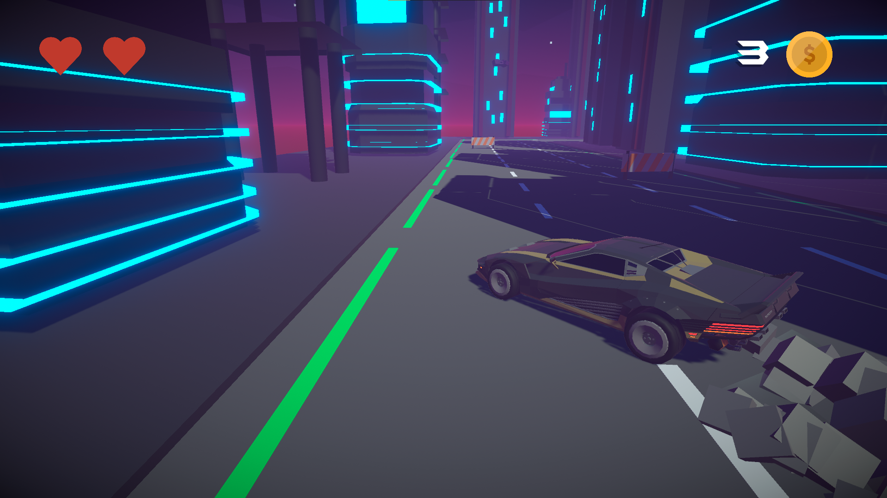
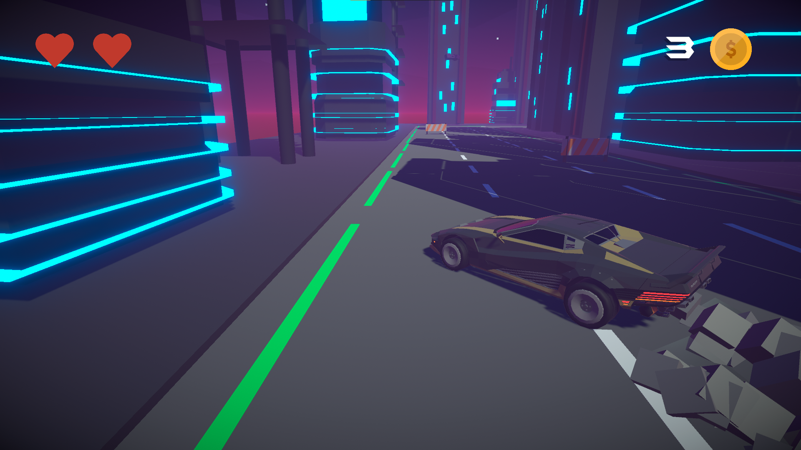

CyberJunk
 

this is a game I made in 3 days to try procedural world generation and a car system .
here's the link to the game

this is a game I made in 3 days to try procedural world generation and a car system .
here's the link to the game